|
ค้นหาที่เที่ยว
|
| 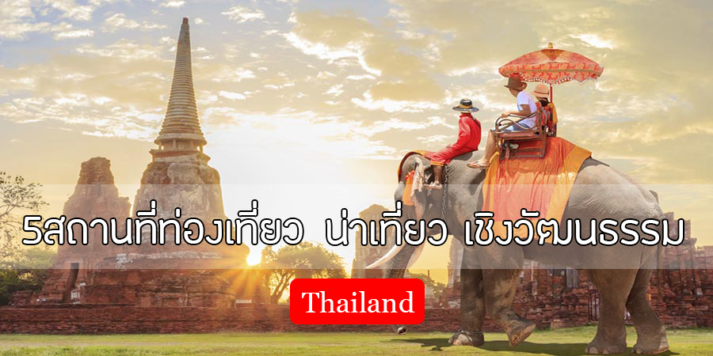 |
| การแสดงละคร/ดนตรี/ภาษาและวรรณกรรม/เทศกาลท้องถิ่น เทศกาลท้องถิ่น |
| 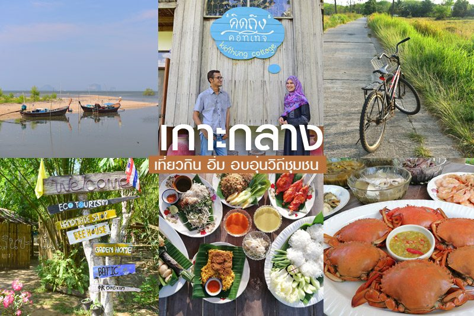 |
|
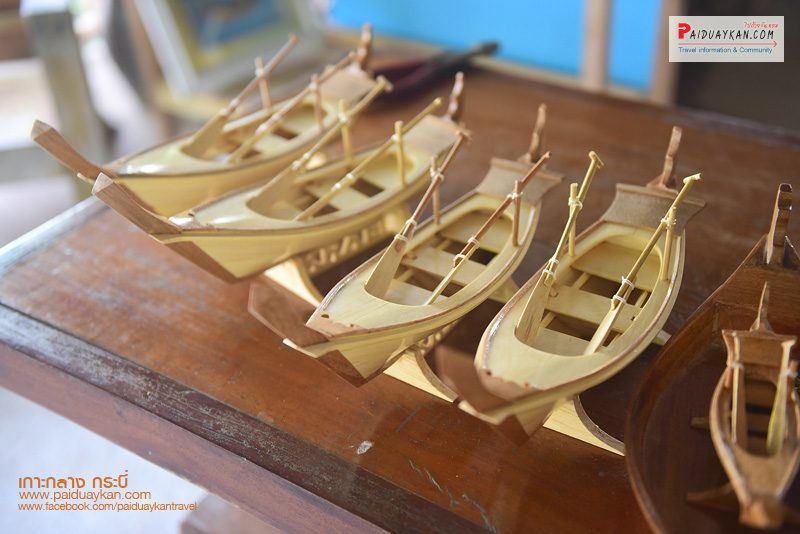
ราแวะชม การทำเรือหัวโทง ซึ่งตั้งอยู่ในศูนย์โอทอปบ้านเกาะกลาง หากเดินทางจากท่าเรือหรือคิดถึงคอทเทจก็จะเจอศูนย์ชาวนาข้าวสังข์หยดเป็นที่แรก แต่วันที่เดินทางไปที่กลุ่มมีงานนิดหน่อยเลยไม่ได้เปิดให้เข้าชม และต่อมาคือ กลุ่มเรือหัวโทง ซึ่งในสมัยก่อนชาวเกาะกลางนิยมใช้เรือหัวโทงทำประมงหาเลี้ยงชีพและใช้ในการเดินทาง แต่ปัจจุบันอาชีพประกอบเรือหัวโทงเริ่มลดน้อยลง และรูปแบบเรือหัวโทงดั้งเดิมก็หาดูได้ยาก ชาวบ้านจึงรวมกลุ่มขึ้นมาเพื่อทำเรือหัวโทงจำลองขึ้นโดยมี บังสมบูรณ์ เป็นผู้บุกเบิก การต่อเรือหัวโทงจำลอง โดยใช้วิชาความรู้ ที่ได้สืบทอด มาจากคุณพ่อ ซึ่งเป็นช่างต่อเรือ ชาวเกาะกลาง ที่มีประสบการณ์มาอย่างยาวนาน นักท่องเที่ยวจะได้เรียนรู้ประวัติและความเป็นมาของเรือที่เป็นสัญลักษณ์ของจังหวัดกระบี่ โดยเรือหัวโทงจำลองจากเกาะกลางได้พัฒนาเป็นสินค้าโอทอประดับ 4 ดาว ที่สร้างชื่อเสียงให้กับจังหวัด 2.บ้านป่าแป๋ จ.แม่ฮ่องสอน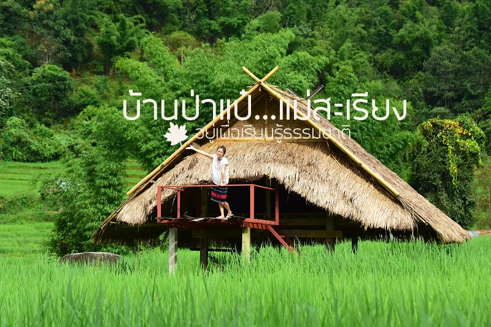จากอำเภอฮอด ลัดเลาะภูเขามายังแม่สะเรียงผ่านพ้นเส้นทางคดเคี้ยวหน่วงหนักมาถึงเขตบ้านอมพาย ที่ตั้งของ ศูนย์พัฒนาโครงการหลวงแม่สะเรียง ซึ่งในเวลานี้งดงามด้วยความเขียวขจีของนาข้าวขั้นบันไดมองเห็นบ้านเรือนของชาวบ้านแทรกตัวอยู่ตามแมกไม้และภูเขาเขียวขจี ภาพสีเขียวนี้ช่วยคลายความเหนื่อยล้าจากการนั่งรถผ่านหนทางที่ยาวไกลได้มากเลยทีเดียว 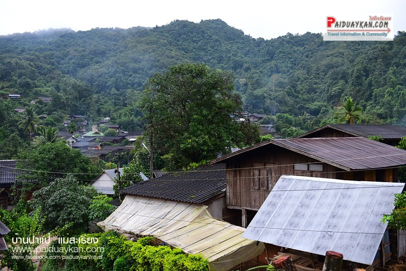ชุมชนบ้านป่าแป๋ อยู่ในอำเภอแม่สะเรียง จังหวัดแม่ฮ่องสอน ใครอยากมาเที่ยวโฮมสเตย์ท่ามกลางธรรมชาติและสัมผัสความเรียบง่ายของชาวบ้านในชุมชนต้องมาที่นี่ค่ะ เพราะนอกจากเราจะได้เรียนรู้การ ทำนา ปลูกข้าว ปลูกผักท้องถิ่น เพื่อนำมาทำอาหารในครัวเรือนแล้ว รอบชุมชนยังมีวิวทุ่งนาสวยๆ พร้อมฉากหลังเป็นทิวเขาเขียวขจี หรือจะไปเก็บภาพไม้ดอกไม้ประดับไปอัปลงโซเชียลก็เก๋ไม่เบา 3.บ้านลาวเวียง จ.อุตรดิตถ์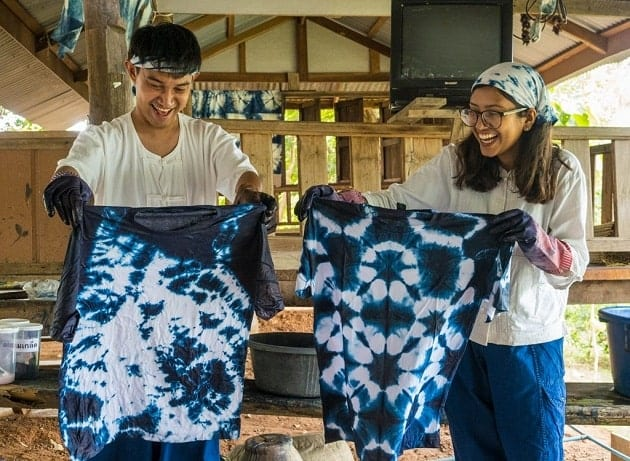บ้านลาวเวียง เป็นแหล่งท่องเที่ยวเชิงวัฒนธรรมในบ้านหาดสองแคว จังหวัดอุตรดิษถ์ ได้ชื่อว่าเป็นชุมชนของชาวบ้านเชื้อสายลาว – เวียงจันทน์ที่อพยพเข้าสู่ประเทศไทยช่วงสมัยรัชกาลที่ 3 ทำให้เกิดการผสมผสานวัฒนธรรมไทยและลาวเข้าด้วยกัน เกิดเป็นแหล่งชุมชนที่มีวิถีชีวิตและวัฒนธรรมประเพณีแบบเฉพาะตัว ภายในชุมชนมีถนนสายวัฒนธรรมลาวเวียงให้เราเดินเล่น ชมสินค้าพื้นบ้าน ชิมของอร่อยอย่าง อั่วบักเผ็ด ทอดมันหัวปลี และขนมดาดกระทะ หรือใครอยากแต่งตัวแบบชาวลาวไปเดินเล่นชมพิพิธภัณฑ์ชุมชนและบริเวณรอบๆ ก็เก๋ไม่เบา ถ่ายรูปสวยๆ กันเพลินแน่นอน 4.เขมราฐ นาแวง และเจียด อำเภอเขมราฐ จังหวัดอุบลราชธานี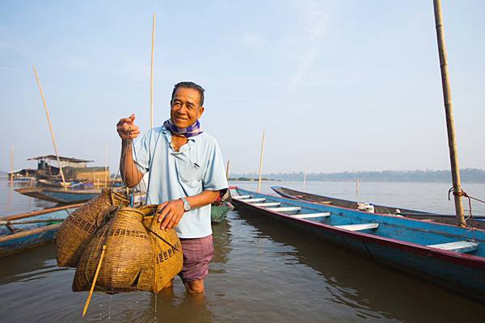ภาคอีสานกับชุมชนสุดน่ารักอย่างเขมราฐ นาแวง และเจียด อำเภอเขมราฐ จังหวัดอุบลราชธานี ชุมชนแห่งนี้มีประวัติที่ยาวนาน ตั้งอยู่ริมแม่น้ำโขง ที่นี่จึงมีเสน่ห์ที่น่าหลงใหล ด้วยมีทั้งแหล่งท่องเที่ยวสวย ๆ รวมทั้งวิถีชีวิตและประเพณีท้องถิ่นอันโดดเด่น ชาวบ้านใช้ชีวิตกันอย่างเรียบง่าย มีโฮมสเตย์ให้พักผ่อน จึงตอบโจทย์ต่อนักท่องเที่ยวที่ต้องการมาเที่ยวในบรรยากาศสบาย ๆ และอยากเรียนรู้วัฒนธรรมในอีกรูปแบบของชาวอีสานริมฝั่งแม่น้ำโขง 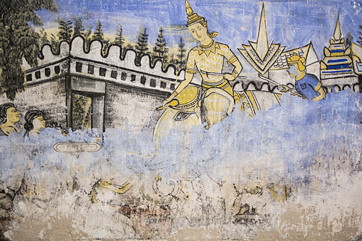 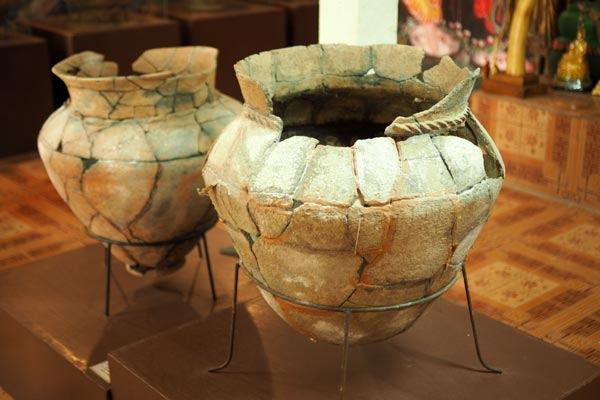5. ชุมชนบ้านปากโสม และบ้านลำภูพาน จังหวัดหนองคาย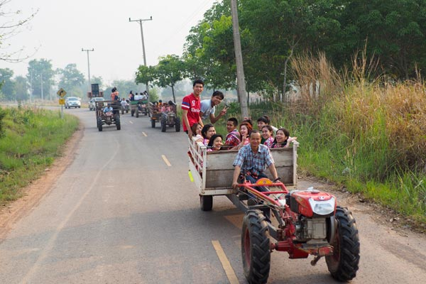เธอ ๆ...อยากไปเที่ยวดูทะเลหมอกชิล ๆ บรรยากาศสบาย ๆ ไปเที่ยวที่ไหนดี ? ติ๊กต๊อก...ติ๊กต๊อก...คิดออกไหมคะ ถ้าคิดไม่ออกตามเรามาทางนี้ค่ะ เราจะพาไปเที่ยวชุมชนแห่งทะเลหมอกของอีสานกัน นั่นก็คือ ชุมชนบ้านปากโสม และบ้านลำภูพาน ตำบลผาตั้ง อำเภอสังคม จังหวัดหนองคาย ซึ่งเป็นแหล่งที่ตั้งของสถานที่ชมทะเลหมอกที่มีความงามอันดับต้น ๆ ของเมืองไทยเลยทีเดียว ไม่ว่าจะเป็นผาชมหมอก, จุดชมวิวสกายวอร์ควัดผาตากเสื้อภูผาดัก และผาวัดใจ 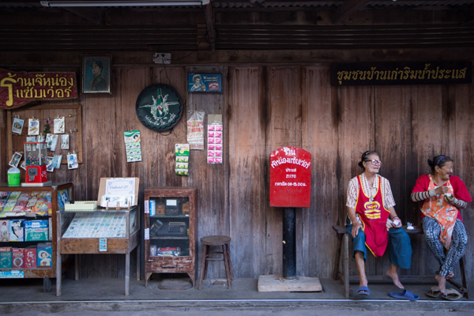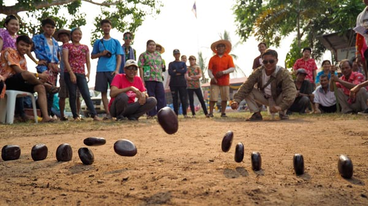 |